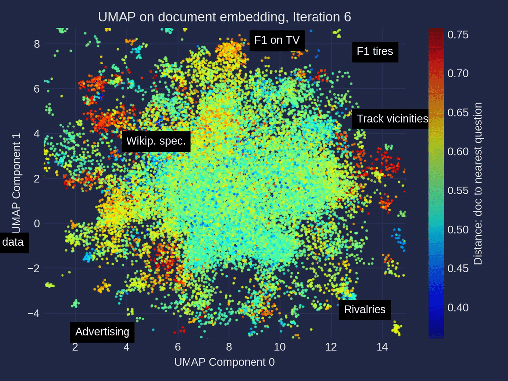

Inteligência
Artificial nas
Finanças Públicas
A IA a serviço da fiscalização da
Secretaria da Fazenda Municipal.
A evolução do trabalho


A IA é o seu copiloto
A IA tira o trabalho mecânico e devolve o que define a profissão: análise, interpretação da norma, juízo.
A decisão de autuar e o lançamento do crédito tributário são exercício do poder de polícia — e o poder de polícia, por lei e por natureza, é indelegável. A máquina não tem, e não pode ter, essa competência. Ela é de vocês.

IA Generativa + Machine Learning
A IA generativa raciocina estatisticamente por meio de modelos de linguagem (LLMs), e por isso é imprecisa com números ou referências exatas. Combinada a modelos estatísticos e de machine learning, treinados com os dados históricos, a seleção de um contribuinte vem com uma probabilidade calculada, mensurável e auditável, deixando de ser apenas um palpite. A máquina indica e fundamenta; quem lança o crédito é o fiscal.
Exemplos de projetos beneficiados por arquiteturas avançadas:
- Detecção de inconsistências
- Análise preditiva de arrecadação e inadimplência
- Auditoria assistida por risco

O mercado mundial de IA
O ecossistema mundial se divide em duas camadas: empresas horizontais (a fundação, os grandes modelos) e verticais (especializadas — jurídico, contábil, fiscal). Então o desafio de empresas, instituições e órgãos públicos não é construir modelos de IA, mas sim escolher as melhores soluções de empresas da camada vertical, que especializaram seu serviço para resolver bem um único problema.
 Mapa interativo do mercado de IA — mad.firstmark.com
Mapa interativo do mercado de IA — mad.firstmark.com
Mais barato
E melhor
A IA cobra por token — o "pedágio" da era da IA. Um token é um pedaço de texto, cerca de 4 letras, ou ¾ de uma palavra. Você paga pelo que envia e pelo que recebe.
Duas curvas se cruzaram: o preço por token despencou em ordens de grandeza, enquanto a capacidade disparou — modelos que leem centenas de páginas de uma vez. Tarefas inviáveis há 3 anos hoje custam centavos. Assim como ocorreu com o armazenamento de dados e com a energia solar: eles se transformaram em commodities e a barreira deixou de ser o custo.



De novidade
a infraestrutura
Adotar a IA cedo, com governança, é como ter sido uma das primeiras cidades com luz elétrica: uma vantagem que se acumula. A pergunta não é se — é quando.
Perguntas?
Vamos continuar a conversa.
Engenheiro de Dados e Especialista em IA
N2AI
uakiti.nascimento@n2ai.org
(11) 99799-7783
linkedin.com/in/uakiti